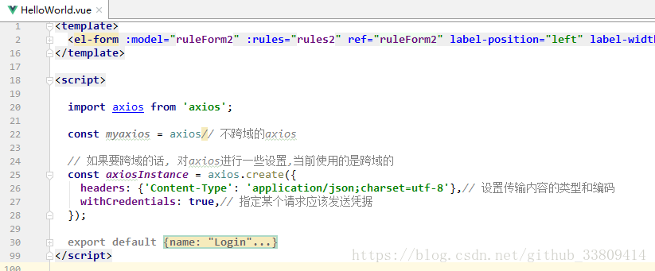
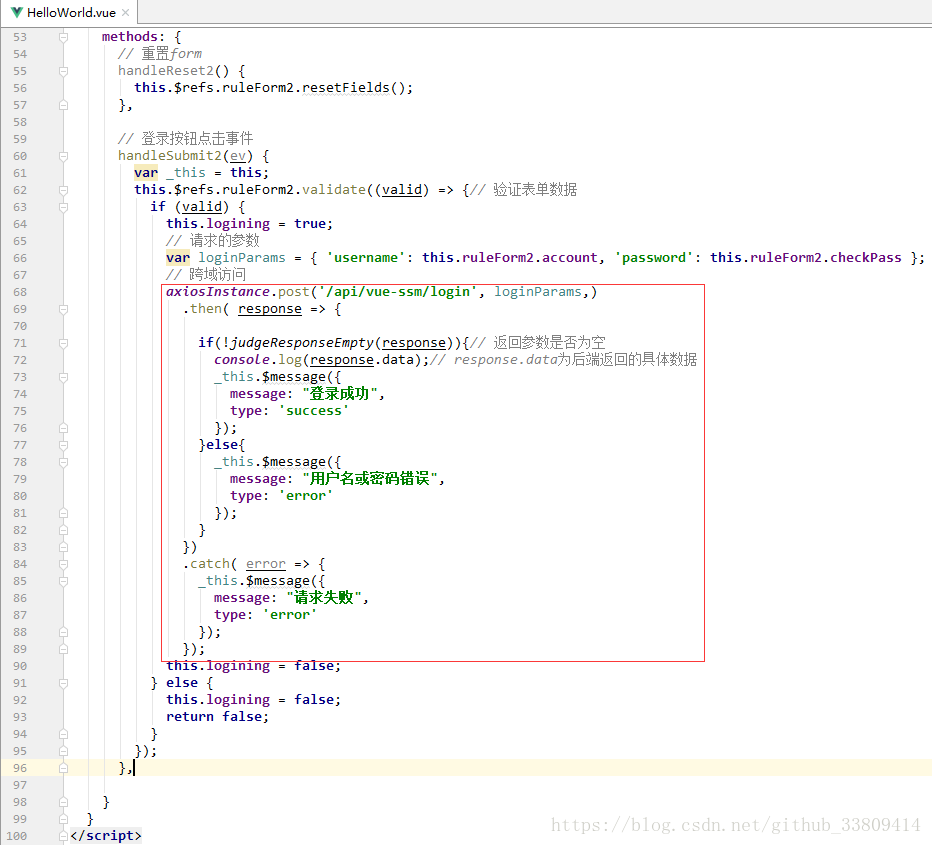

<!DOCTYPE html><html lang="en"><head><meta name="generator" content="Hexo 3.9.0"><meta charset="utf-8"><meta name="keywords" content="个人博客, 松林羊, ysl, songlinsheep, andus, blog, 个人站点, 个人网站"><meta name="description" content="松林羊的个人网站，用于记录，分享。欢迎交流^-^"><meta name="viewport" content="width=device-width,initial-scale=1,maximum-scale=1"><title> vue-axios 前后端分离 跨域访问的实现 | 松林羊</title><link rel="shortcut icon" href="/smile.ico"><link rel="stylesheet" href="/css/style.css"><link rel="stylesheet" href="/fancybox/jquery.fancybox.min.css"><script src="/js/pace.min.js"></script><script>!function(e,t,o,c,i,a,n){e.DaoVoiceObject=i,e[i]=e[i]||function(){(e[i].q=e[i].q||[]).push(arguments)},e[i].l=1*new Date,a=t.createElement(o),n=t.getElementsByTagName(o)[0],a.async=1,a.src=c,a.charset="utf-8",n.parentNode.insertBefore(a,n)}(window,document,"script",("https:"==document.location.protocol?"https:":"http:")+"//widget.daovoice.io/widget/0f81ff2f.js","daovoice"),daovoice("init",{app_id:"1559132c"}),daovoice("update")</script></head></html><body><main class="content"><section class="outer"><article id="post-vue-axios-前后端分离-跨域访问的实现" class="article article-type-post" itemscope itemprop="blogPost" data-scroll-reveal><div class="article-inner"><header class="article-header"><h1 class="article-title" itemprop="name"> vue-axios 前后端分离 跨域访问的实现</h1></header><div class="article-meta"> <a href="/2018/08/22/vue-axios-前后端分离-跨域访问的实现/" class="article-date"><time datetime="2018-08-22T07:03:15.000Z" itemprop="datePublished">2018-08-22</time></a><div class="article-category"> <a class="article-category-link" href="/categories/Web开发/">Web开发</a></div> &emsp;<i class="fe fe-bar-chart"></i> <span class="post-count">1.1k</span>字 &emsp;<i class="fe fe-clock"></i> <span class="post-count">4</span>分钟</div><div class="tocbot"></div><div class="article-entry" itemprop="articleBody"><h5 id="一-基本环境"><a href="#一-基本环境" class="headerlink" title="一. 基本环境"></a><strong>一. 基本环境</strong></h5><ul><li>前端<br>vue：2.5.6<br>axios：0.18<br>使用vue脚手架构建项目。参照：<a href="https://blog.csdn.net/weixin_40760196/article/details/79952652" target="_blank" rel="noopener">webstorm搭建vue项目</a></li><li>后台<br>ssm框架</li><li>前后端数据采用json格式传输</li></ul><h4 id="二-前端配置"><a href="#二-前端配置" class="headerlink" title="二. 前端配置"></a><strong>二. 前端配置</strong></h4><ul><li><strong>axios配置</strong></li></ul><ol><li><p>安装</p><figure class="highlight javascript"><table><tr><td class="gutter"><pre><span class="line">1</span><br></pre></td><td class="code"><pre><span class="line">npm install axios --save</span><br></pre></td></tr></table></figure></li><li><p>在所需组件中引入axios</p><figure class="highlight javascript"><table><tr><td class="gutter"><pre><span class="line">1</span><br></pre></td><td class="code"><pre><span class="line"><span class="keyword">import</span> axios <span class="keyword">from</span> <span class="string">'axios'</span>;</span><br></pre></td></tr></table></figure></li><li><p>在&lt;script&gt;中配置axios参数</p><figure class="highlight javascript"><table><tr><td class="gutter"><pre><span class="line">1</span><br><span class="line">2</span><br><span class="line">3</span><br><span class="line">4</span><br><span class="line">5</span><br><span class="line">6</span><br></pre></td><td class="code"><pre><span class="line"><span class="keyword">const</span> myaxios = axios<span class="comment">// 不跨域的axios</span></span><br><span class="line"><span class="comment">// 如果要跨域的话, 对axios进行一些设置,当前使用的是跨域的</span></span><br><span class="line"><span class="keyword">const</span> axiosInstance = axios.create(&#123;</span><br><span class="line">	headers: &#123;<span class="string">'Content-Type'</span>: <span class="string">'application/json;charset=utf-8'</span>&#125;,<span class="comment">// 设置传输内容的类型和编码</span></span><br><span class="line">	withCredentials: <span class="literal">true</span>,<span class="comment">// 指定某个请求应该发送凭据。允许客户端携带跨域cookie，也需要此配置</span></span><br><span class="line">&#125;);</span><br></pre></td></tr></table></figure><p> </p></li></ol><ul><li><p><strong>代理配置</strong><br>打开config/index.js文件，找到dev对象里面的proxyTable修改为如下内容：</p><figure class="highlight javascript"><table><tr><td class="gutter"><pre><span class="line">1</span><br><span class="line">2</span><br><span class="line">3</span><br><span class="line">4</span><br><span class="line">5</span><br><span class="line">6</span><br><span class="line">7</span><br><span class="line">8</span><br><span class="line">9</span><br><span class="line">10</span><br></pre></td><td class="code"><pre><span class="line">proxyTable: &#123;</span><br><span class="line">  <span class="string">'/api'</span>: &#123;</span><br><span class="line">    target:<span class="string">'http://127.0.0.1:80'</span>,</span><br><span class="line">    <span class="comment">// secure: false, // 如果是https接口，需要配置这个参数</span></span><br><span class="line">    changeOrigin:<span class="literal">true</span>,</span><br><span class="line">    pathRewrite:&#123;</span><br><span class="line">      <span class="string">'^/api'</span>: <span class="string">''</span></span><br><span class="line">    &#125;</span><br><span class="line">  &#125;</span><br><span class="line">&#125;,</span><br></pre></td></tr></table></figure><p> <font color="#C7254E">target</font> 的参数就是你要访问的服务器地址, 你在代码里面写/api就等于写了这个地址 , 比如我要访问<a href="http://127.0.0.1:80/vue-ssm/login这个接口在代码里面只需写/api/vue-ssm/login就可以了" target="_blank" rel="noopener">http://127.0.0.1:80/vue-ssm/login这个接口在代码里面只需写/api/vue-ssm/login就可以了</a></p></li><li><p><strong>使用axios发送请求</strong></p><figure class="highlight javascript"><table><tr><td class="gutter"><pre><span class="line">1</span><br><span class="line">2</span><br><span class="line">3</span><br><span class="line">4</span><br><span class="line">5</span><br><span class="line">6</span><br><span class="line">7</span><br><span class="line">8</span><br><span class="line">9</span><br></pre></td><td class="code"><pre><span class="line"><span class="comment">// 跨域访问</span></span><br><span class="line">axiosInstance.post(<span class="string">'/api/vue-ssm/login'</span>, 请求的参数,)</span><br><span class="line">.then( <span class="function"><span class="params">response</span> =&gt;</span> &#123;</span><br><span class="line">  <span class="built_in">console</span>.log(response.data);<span class="comment">// response.data为后端返回的具体数据</span></span><br><span class="line">  alert(<span class="string">"请求成功"</span>);</span><br><span class="line">&#125;)</span><br><span class="line">.catch( <span class="function"><span class="params">error</span> =&gt;</span> &#123;</span><br><span class="line">  alert(<span class="string">"请求失败"</span>);</span><br><span class="line">&#125;);</span><br></pre></td></tr></table></figure><p> <br>axios详细参数配置可以参考：<a href="https://www.kancloud.cn/yunye/axios/234845" target="_blank" rel="noopener">Axios 中文说明</a></p></li></ul><h4 id="三-后端配置"><a href="#三-后端配置" class="headerlink" title="三. 后端配置"></a><strong>三. 后端配置</strong></h4><ul><li><p>使用SpringMvc的HandlerInterceptorAdapter拦截器</p><figure class="highlight java"><table><tr><td class="gutter"><pre><span class="line">1</span><br><span class="line">2</span><br><span class="line">3</span><br><span class="line">4</span><br><span class="line">5</span><br><span class="line">6</span><br><span class="line">7</span><br><span class="line">8</span><br><span class="line">9</span><br><span class="line">10</span><br><span class="line">11</span><br><span class="line">12</span><br><span class="line">13</span><br><span class="line">14</span><br><span class="line">15</span><br><span class="line">16</span><br><span class="line">17</span><br><span class="line">18</span><br><span class="line">19</span><br><span class="line">20</span><br><span class="line">21</span><br><span class="line">22</span><br><span class="line">23</span><br><span class="line">24</span><br><span class="line">25</span><br><span class="line">26</span><br><span class="line">27</span><br><span class="line">28</span><br><span class="line">29</span><br><span class="line">30</span><br><span class="line">31</span><br><span class="line">32</span><br><span class="line">33</span><br><span class="line">34</span><br><span class="line">35</span><br><span class="line">36</span><br><span class="line">37</span><br><span class="line">38</span><br><span class="line">39</span><br><span class="line">40</span><br><span class="line">41</span><br><span class="line">42</span><br><span class="line">43</span><br><span class="line">44</span><br><span class="line">45</span><br><span class="line">46</span><br><span class="line">47</span><br><span class="line">48</span><br><span class="line">49</span><br><span class="line">50</span><br><span class="line">51</span><br><span class="line">52</span><br><span class="line">53</span><br><span class="line">54</span><br><span class="line">55</span><br><span class="line">56</span><br><span class="line">57</span><br><span class="line">58</span><br><span class="line">59</span><br></pre></td><td class="code"><pre><span class="line"><span class="keyword">public</span> <span class="class"><span class="keyword">class</span> <span class="title">RquestInterceptor</span> <span class="keyword">extends</span> <span class="title">HandlerInterceptorAdapter</span> </span>&#123;</span><br><span class="line"></span><br><span class="line">	<span class="comment">/**</span></span><br><span class="line"><span class="comment">     * 预处理回调方法，实现处理器的预处理（如检查登陆），第三个参数为响应的处理器，自定义Controller</span></span><br><span class="line"><span class="comment">     * 返回值：true表示继续流程（如调用下一个拦截器或处理器）；false表示流程中断（如登录检查失败），</span></span><br><span class="line"><span class="comment">     * 不会继续调用其他的拦截器或处理器，此时我们需要通过response来产生响应；</span></span><br><span class="line"><span class="comment">     */</span></span><br><span class="line">	<span class="meta">@Override</span></span><br><span class="line">	<span class="function"><span class="keyword">public</span> <span class="keyword">boolean</span> <span class="title">preHandle</span><span class="params">(HttpServletRequest request, HttpServletResponse response, Object handler)</span></span></span><br><span class="line"><span class="function">			<span class="keyword">throws</span> Exception </span>&#123;</span><br><span class="line">		<span class="comment">// 允许客户端携带跨域cookie</span></span><br><span class="line">		<span class="comment">// 当Access-Control-Allow-Credentials设为true的时候，Access-Control-Allow-Origin不能设为星号</span></span><br><span class="line">		response.setHeader(<span class="string">"Access-Control-Allow-Credentials"</span>, <span class="string">"true"</span>);</span><br><span class="line">		<span class="comment">// 允许指定域访问跨域资源</span></span><br><span class="line">		<span class="comment">//response.setHeader("Access-Control-Allow-Origin", "http://127.0.0.1:9006, http://127.0.0.1:8080");</span></span><br><span class="line">		response.setHeader(<span class="string">"Access-Control-Allow-Origin"</span>, request.getHeader(<span class="string">"Origin"</span>));<span class="comment">// *</span></span><br><span class="line">		<span class="comment">// 允许浏览器发送的请求消息头</span></span><br><span class="line">		response.setHeader(<span class="string">"Access-Control-Allow-Headers"</span>, request.getHeader(<span class="string">"Access-Control-Request-Headers"</span>));<span class="comment">// *</span></span><br><span class="line">		<span class="comment">// 允许浏览器在预检请求成功之后发送的实际请求方法名</span></span><br><span class="line">		response.setHeader(<span class="string">"Access-Control-Allow-Methods"</span>, request.getHeader(<span class="string">"Access-Control-Request-Method"</span>));</span><br><span class="line">		<span class="comment">// 设置响应数据格式</span></span><br><span class="line">		response.setHeader(<span class="string">"Content-Type"</span>, <span class="string">"application/json"</span>);</span><br><span class="line">		<span class="comment">// 查看请求方法</span></span><br><span class="line">		String method= request.getMethod();</span><br><span class="line">		System.out.println(method);</span><br><span class="line">		<span class="keyword">return</span> <span class="keyword">true</span>;</span><br><span class="line"></span><br><span class="line">	&#125;</span><br><span class="line">	<span class="comment">/*下面的方法可以不重写*/</span></span><br><span class="line">	<span class="comment">/**</span></span><br><span class="line"><span class="comment">     * 后处理回调方法，实现处理器的后处理（但在渲染视图之前），此时我们可以通过modelAndView（模型和视图对象）</span></span><br><span class="line"><span class="comment">     * 对模型数据进行处理或对视图进行处理，modelAndView也可能为null。</span></span><br><span class="line"><span class="comment">     */</span></span><br><span class="line">	<span class="meta">@Override</span></span><br><span class="line">	<span class="function"><span class="keyword">public</span> <span class="keyword">void</span> <span class="title">postHandle</span><span class="params">(HttpServletRequest request, HttpServletResponse response, Object handler,</span></span></span><br><span class="line"><span class="function"><span class="params">			ModelAndView modelAndView)</span> <span class="keyword">throws</span> Exception </span>&#123;</span><br><span class="line">		<span class="keyword">super</span>.postHandle(request, response, handler, modelAndView);</span><br><span class="line">	&#125;</span><br><span class="line">	</span><br><span class="line">	<span class="comment">/**</span></span><br><span class="line"><span class="comment">     * 整个请求处理完毕回调方法，即在视图渲染完毕时回调，如性能监控中我们可以在此记录结束时间并输出消耗时间，</span></span><br><span class="line"><span class="comment">     * 还可以进行一些资源清理，类似于try-catch-finally中的finally，但仅调用处理器执行链中</span></span><br><span class="line"><span class="comment">     */</span></span><br><span class="line">	<span class="meta">@Override</span></span><br><span class="line">	<span class="function"><span class="keyword">public</span> <span class="keyword">void</span> <span class="title">afterCompletion</span><span class="params">(HttpServletRequest request, HttpServletResponse response, Object handler, Exception ex)</span></span></span><br><span class="line"><span class="function">			<span class="keyword">throws</span> Exception </span>&#123;</span><br><span class="line">		<span class="keyword">super</span>.afterCompletion(request, response, handler, ex);</span><br><span class="line">	&#125;</span><br><span class="line">	</span><br><span class="line">	<span class="comment">/**</span></span><br><span class="line"><span class="comment">	 * 处理异步请求</span></span><br><span class="line"><span class="comment">     * 不是HandlerInterceptor的接口实现，是AsyncHandlerInterceptor的</span></span><br><span class="line"><span class="comment">     * AsyncHandlerInterceptor实现了HandlerInterceptor</span></span><br><span class="line"><span class="comment">     */</span></span><br><span class="line">	<span class="function"><span class="keyword">public</span> <span class="keyword">void</span> <span class="title">afterConcurrentHandlingStarted</span><span class="params">(HttpServletRequest request, HttpServletResponse response, Object handler)</span></span></span><br><span class="line"><span class="function">			<span class="keyword">throws</span> Exception </span>&#123;</span><br><span class="line">		<span class="keyword">super</span>.afterConcurrentHandlingStarted(request, response, handler);</span><br><span class="line">	&#125;</span><br><span class="line">&#125;</span><br></pre></td></tr></table></figure></li><li><p>配置到SpringMvc配置文件</p><figure class="highlight xml"><table><tr><td class="gutter"><pre><span class="line">1</span><br><span class="line">2</span><br><span class="line">3</span><br><span class="line">4</span><br><span class="line">5</span><br><span class="line">6</span><br><span class="line">7</span><br><span class="line">8</span><br><span class="line">9</span><br></pre></td><td class="code"><pre><span class="line"><span class="tag">&lt;<span class="name">mvc:interceptors</span>&gt;</span></span><br><span class="line">	<span class="comment">&lt;!-- 注意拦截器的执行顺序，会按照这里配置顺序执行 --&gt;</span></span><br><span class="line">	<span class="tag">&lt;<span class="name">mvc:interceptor</span>&gt;</span></span><br><span class="line">		<span class="tag">&lt;<span class="name">mvc:mapping</span> <span class="attr">path</span>=<span class="string">"/**"</span> /&gt;</span><span class="comment">&lt;!--匹配所有路径--&gt;</span></span><br><span class="line">		<span class="tag">&lt;<span class="name">bean</span> <span class="attr">class</span>=<span class="string">"com.ysl.interceptor.RquestInterceptor"</span> /&gt;</span></span><br><span class="line">	<span class="tag">&lt;/<span class="name">mvc:interceptor</span>&gt;</span></span><br><span class="line">	<span class="comment">&lt;!-- 其他拦截器 --&gt;</span></span><br><span class="line">   <span class="tag">&lt;<span class="name">mvc:interceptor</span>&gt;</span><span class="tag">&lt;/<span class="name">mvc:interceptor</span>&gt;</span></span><br><span class="line"><span class="tag">&lt;/<span class="name">mvc:interceptors</span>&gt;</span></span><br></pre></td></tr></table></figure></li></ul><p>好了，这就是我使用axios实现跨域访问的全过程，希望对大家有所帮助。</p><blockquote><p><strong>参考：</strong><br><a href="https://blog.csdn.net/huang100qi/article/details/77132096" target="_blank" rel="noopener">https://blog.csdn.net/huang100qi/article/details/77132096</a><br><a href="https://blog.csdn.net/qq_22844483/article/details/78661030" target="_blank" rel="noopener">https://blog.csdn.net/qq_22844483/article/details/78661030</a><br><a href="https://www.jianshu.com/p/1e8d088c2be9" target="_blank" rel="noopener">https://www.jianshu.com/p/1e8d088c2be9</a><br><a href="https://segmentfault.com/a/1190000015597029" target="_blank" rel="noopener">https://segmentfault.com/a/1190000015597029</a></p></blockquote></div><footer class="article-footer"><ul class="article-tag-list"><li class="article-tag-list-item"><a class="article-tag-list-link" href="/tags/Vue/">Vue</a></li><li class="article-tag-list-item"><a class="article-tag-list-link" href="/tags/axios/">axios</a></li><li class="article-tag-list-item"><a class="article-tag-list-link" href="/tags/跨域/">跨域</a></li></ul><div style="text-align:center;color:#ccc;font-size:14px;margin-top:10px"> ------------- 本文结束&nbsp;<i class="fe fe-smile"></i>&nbsp;感谢您的阅读 -------------</div></footer></div><nav class="article-nav"> <a href="/2018/08/27/MySQL数据库字段级权限设计/" class="article-nav-link"><strong class="article-nav-caption">前一篇</strong><div class="article-nav-title"> MySQL数据库字段级权限设计</div></a></nav><div class="comment_headling" style="margin-top:5rem"><font size="5"><i class="fe fe-comments"></i> 评论</font></div><div class="comment"></div><script src="https://cdn1.lncld.net/static/js/3.0.4/av-min.js"></script><script src="/js/Valine.min.js"></script><script type="text/javascript">GUEST_INFO=["nick","mail","link"],guest_info="nick,mail,link".split(",").filter(function(i){return-1<GUEST_INFO.indexOf(i)}),guest_info=0==guest_info.length?GUEST_INFO:guest_info,new Valine({av:AV,el:".comment",app_id:"fq4O7Xaf1cYDbADGellNEn6V-gzGzoHsz",app_key:"a626rNIHkVVk8tGBBCfaQjb9",placeholder:"记得留下你的昵称和邮箱...可以快速收到回复ヾﾉ≧∀≦)o",meta:guest_info,notify:!0,verify:!1,avatar:"monsterid",recordIP:!0,visitor:!1,lang:"zh-cn"})</script></article></section><footer class="footer"><div class="outer"><ul class="list-inline"><li>已分享 49 篇博文，累计 <span class="post-count">55.1k</span> 字</li><ul class="list-inline"><li><i class="fe fe-smile-alt"></i>&nbsp;访客数&emsp;<span id="busuanzi_value_site_uv"></span></li><li><i class="fe fe-bookmark"></i>&nbsp;文章访问量&emsp;<span id="busuanzi_value_page_pv"></span></li></ul></ul><ul class="list-inline"><li><span id="timeDate">载入天数...</span><span id="times">载入时分秒...</span></li><script>var now=new Date;function createtime(){var n=new Date("07/28/2019 10:02:00");now.setTime(now.getTime()+250),days=(now-n)/1e3/60/60/24,dnum=Math.floor(days),hours=(now-n)/1e3/60/60-24*dnum,hnum=Math.floor(hours),1==String(hnum).length&&(hnum="0"+hnum),minutes=(now-n)/1e3/60-1440*dnum-60*hnum,mnum=Math.floor(minutes),1==String(mnum).length&&(mnum="0"+mnum),seconds=(now-n)/1e3-86400*dnum-3600*hnum-60*mnum,snum=Math.round(seconds),1==String(snum).length&&(snum="0"+snum),document.getElementById("timeDate").innerHTML="已等候你 "+dnum+" 天 ",document.getElementById("times").innerHTML=hnum+" 小时 "+mnum+" 分 "+snum+" 秒"}setInterval("createtime()",250)</script><ul class="list-inline"><li>&copy; 2019-2019 松林羊</li><li>Theme <a href="https://github.com/zhwangart/hexo-theme-ocean">Ocean</a></li></ul></ul></div></footer></main><aside class="sidebar sidebar-specter"> <button class="navbar-toggle"></button><nav class="navbar"><div class="logo"> <a href="/"></a></div><ul class="nav nav-main"><li class="nav-item"> <a class="nav-item-link" href="/" target="_self">主页</a></li><li class="nav-item"> <a class="nav-item-link" href="/archives" target="_self">归档</a></li><li class="nav-item"> <a class="nav-item-link" href="/categories" target="_self">分类</a></li><li class="nav-item"> <a class="nav-item-link" href="/tags" target="_self">标签</a></li><li class="nav-item"> <a class="nav-item-link" href="/links" target="_self">友链</a></li><li class="nav-item"> <a class="nav-item-link">综合</a><ul class="nav nav-main nav2"><li class="nav-item li2"> <a class="nav-item-link-child" href="/resource" target="_self">资 源</a></li><li class="nav-item li2"> <a class="nav-item-link-child" href="/site" target="_self">网 站</a></li></ul></li><li class="nav-item"> <a class="nav-item-link">关于</a><ul class="nav nav-main nav2"><li class="nav-item li2"> <a class="nav-item-link-child" href="/me" target="_self">博 主</a></li><li class="nav-item li2"> <a class="nav-item-link-child" href="http://stars.andus.top/" target="_blank">记 录</a></li><li class="nav-item li2"> <a class="nav-item-link-child" href="/plan" target="_self">计 划</a></li></ul></li><li class="nav-item"> <a class="nav-item-link" href="http://resume.andus.top/" target="_blank">简 历</a></li><li class="nav-item"><a class="nav-item-link nav-item-search" title="搜索"><i class="fe fe-search"></i> 搜索</a></li></ul></nav><nav class="navbar navbar-bottom"><ul class="nav"><li class="nav-item"><div class="totop" id="totop"><i class="fe fe-rocket"></i></div></li><li class="nav-item"></li></ul></nav><div class="search-form-wrap"><div class="local-search local-search-plugin"> <input type="search" id="local-search-input" class="local-search-input" placeholder="Search..."><div id="local-search-result" class="local-search-result"></div></div></div></aside><script src="/js/jquery-2.0.3.min.js"></script><script src="/js/jquery.justifiedGallery.min.js"></script><script src="/js/lazyload.min.js"></script><script src="/js/busuanzi-2.3.pure.min.js"></script><script src="/fancybox/jquery.fancybox.min.js"></script><script src="/js/tocbot.min.js"></script><script>900<=document.body.clientWidth&&tocbot.init({tocSelector:".tocbot",contentSelector:".article-entry",headingSelector:"h1, h2, h3, h4, h5, h6",hasInnerContainers:!0,scrollSmooth:!0,positionFixedSelector:".tocbot",positionFixedClass:"is-position-fixed",fixedSidebarOffset:"auto"})</script><script src="/js/ocean.js"></script><script src="/js/andus.js"></script><script src="/js/love.js"></script><script>$("img:not(#andus-head-img)").each(function(){$(this).wrap('<a class="fancybox" data-fancybox="gallery" href="'+$(this).prop("src")+'"></a>')})</script><script src="/live2dw/lib/L2Dwidget.min.js?094cbace49a39548bed64abff5988b05"></script><script>L2Dwidget.init({model:{scale:1,hHeadPos:.5,vHeadPos:.618,jsonPath:"/live2dw/assets/haruto.model.json"},display:{superSample:2,width:150,height:300,position:"left",hOffset:0,vOffset:-20},mobile:{show:!1},react:{opacityDefault:.5,opacityOnHover:.2},log:!1,pluginJsPath:"lib/",pluginModelPath:"assets/",pluginRootPath:"live2dw/",tagMode:!1})</script></body>